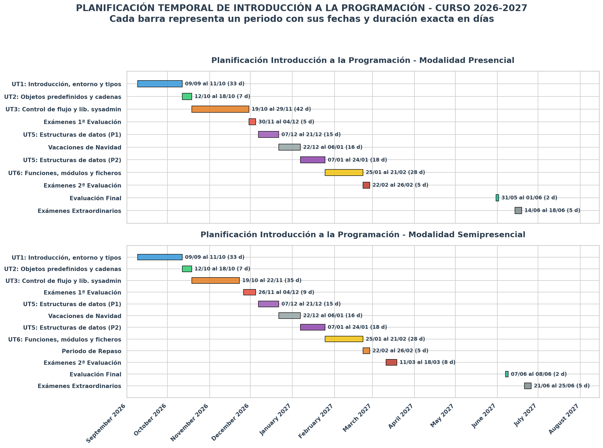

Planificación del módulo y calendario de trabajo¶
Este documento resume el ritmo de trabajo del módulo: las unidades, las tutorías colectivas del grupo semipresencial y las entregas que se revisarán cada domingo.
1. Vista general del curso¶
A continuación se muestra una planificación temporal de las Unidades de Trabajo y las evaluaciones a lo largo del curso. Esta planificación queda sujeta a posibles modificaciones.

2. Reglas de trabajo durante el curso¶
- La fecha ordinaria de entrega será el domingo por la noche.
- No habrá entregas entre el 22 de diciembre y el 6 de enero.
- Las entregas se harán en tu repositorio privado del módulo.
- Cada unidad tiene dos bloques: ejercicios de
practicary ejercicios deentregar. - Cada bloque se trabaja en su propia rama y con su Pull Request hacia
mainabierta hasta que el profesor indique el cierre. - Si un bloque ocupa varias semanas, continúa en la misma rama y Pull Request; no abras una rama nueva cada domingo.
- Antes de cerrar una Pull Request, completa el archivo
reflexion.mdde la unidad.
3. Cómo entregar cada bloque¶
Ejercicios de practicar¶
Trabaja en:
Rama orientativa:
Estos ejercicios sirven para afianzar sintaxis, probar alternativas y localizar errores. Deben contener código ejecutable, commits progresivos y las explicaciones que pida el enunciado.
Ejercicios de entregar¶
Trabaja en:
Rama orientativa:
En cada entrega debe quedar claro:
- qué ejercicios has completado;
- cómo has comprobado los resultados;
- qué dificultades has tenido y cómo las resolviste;
- qué uso de IA has realizado, si lo hubo;
- una reflexión actualizada en
reflexion.mdal finalizar el bloque.
4. Tutorías colectivas del grupo semipresencial¶
Las tutorías serán normalmente online los lunes por la tarde, en el horario habitual del grupo, aproximadamente cada dos semanas. Se dedicarán a desbloquear conceptos, depurar ejemplos y orientar la entrega más próxima; no serán clases teóricas y no sustituyen el trabajo previo que el alumno debe realizar con los apuntes.
| Fecha | Foco de la sesión | Qué conviene traer preparado |
|---|---|---|
| 14/09 | 1) Arranque, entorno, repositorio, ramas y Pull Requests 2) Inicio UT1 |
Guía de entregas leída y cuenta de GitHub creada, si es posible, con el entorno de trabajo y el repositorio de entregas montado. |
| 28/09 | 1) UT1: variables, tipos, entrada/salida y lectura de errores 2) Resolución dudas |
Primeros ejercicios de practicar intentados. Traer dudas ejercicios concretos. |
| 14/10 | 1) UT2: objetos predefinidos y cadenas. 2) Resolución dudas |
Leída la teoría e intentados ejercicios para practicar. Traer dudas ejercicios concretos. |
| 26/10 | 1) UT3: condicionales, bucles y trazado manual. 2) Resolución dudas |
Ejercicios para practicar if hechos. Ejercicios para practicar de while intentados. Traer algún ejercicio con if o while que haya dado problemas. |
| 09/11 | 1) UT3: funciones de librerías y ejercicio de ejemplo 2) Resolución dudas |
Ejercicios para practicar terminados. |
| 16/11 | Cierre de UT3 y dudas antes de la evaluación | Ejercicios para entregar casi terminados. Dudas concretas de ejercicios. |
| 09/12 | 1) UT5: listas, mutabilidad, copias y recorrido 2) Resolución dudas |
Ejercicios para practicar de listas intentados. |
| 11/01 | 1) UT5: diccionarios y elección de estructura 2) Resolución dudas |
Ejercicios para practicar de diccionarios intentados. |
| 18/01 | Resolución dudas ejercicios para entregar listas y diccionarios |
Ejercicios para entregar de diccionarios intentados. |
| 01/02 | 1) UT6: ficheros 2) Resolución dudas sobre funciones y módulos |
Primeros ejercicios para practicar con rutas o ficheros intentados. |
| 15/02 | 1) Ficheros, pathlib, glob y tratamiento de errores |
Primeros ejercicios para entregar intentados |
5. Entregas semanales¶
UT1 - Introducción, entorno y tipos de datos¶
| Fecha | Tipo | Rama | Entrega prevista |
|---|---|---|---|
| 20/09 | Seguimiento de practicar | u01-introduccion-python-practicar |
Entorno preparado, primeros ejercicios para practicar hechos. |
| 27/09 | Entrega de practicar | u01-introduccion-python-practicar |
Ejercicios para practicar resueltos y comprobados. |
| 04/10 | Seguimiento de entregar | u01-introduccion-python-entregar |
Primeros ejercicios para entregar resueltos. |
| 11/10 | Entrega de entregar | u01-introduccion-python-entregar |
Bloque entregar completo, reflexion.md actualizado y Pull Request lista para revisión. |
UT2 - Objetos predefinidos y cadenas de texto¶
| Fecha | Tipo | Rama | Entrega prevista |
|---|---|---|---|
| 18/10 | Entrega de unidad | u02-objetos-cadenas-practicar y u02-objetos-cadenas-entregar |
Entrega de ejercicios de ambos bloques (practicar y entregar) con su estado real y reflexión de unidad. |
UT3 - Control de flujo y librerías útiles para sysadmin¶
| Fecha | Tipo | Rama | Entrega prevista |
|---|---|---|---|
| 25/10 | Seguimiento de practicar | u03-control-flujo-sysadmin-practicar |
Ejercicios condicionales. |
| 01/11 | Seguimiento de practicar | u03-control-flujo-sysadmin-practicar |
Ejercicios bucle while. |
| 08/11 | Entrega de practicar | u03-control-flujo-sysadmin-practicar |
Ejercicios bucle for. |
| 15/11 | Seguimiento de entregar | u03-control-flujo-sysadmin-entregar |
Ejercicios condicionales con enfoque sysadmin |
| 22/11 | Entrega de entregar | u03-control-flujo-sysadmin-entregar |
Ejercicios bucles con enfoque sysadmin. Documenta lo que quede pendiente. |
UT5 - Estructuras de datos¶
| Fecha | Tipo | Rama | Entrega prevista |
|---|---|---|---|
| 13/12 | Seguimiento de practicar | u05-estructuras-datos-practicar |
Ejercicios de listas para practicar comenzados. |
| 20/12 | Seguimiento de practicar | u05-estructuras-datos-practicar |
Ejercicios de listas para practicar terminados. |
| 17/01 | Entrega de practicar | u05-estructuras-datos-practicar |
Ejercicios de diccionarios para practicar terminados. |
| 24/01 | Entrega de entregar | u05-estructuras-datos-entregar |
Ejercicios de listas y diccionarios para entregar. |
UT6 - Funciones, módulos y ficheros¶
| Fecha | Tipo | Rama | Entrega prevista |
|---|---|---|---|
| 31/01 | Seguimiento de practicar | u06-funciones-ficheros-practicar |
Ejercicios de funciones con parámetros, retorno y casos de prueba sencillos. |
| 07/02 | Seguimiento de practicar | u06-funciones-ficheros-practicar |
Ejercicios de ficheros para practicar. |
| 14/02 | Entrega de practicar | u06-funciones-ficheros-practicar |
Ejercicios de sysadmin con glob para practicar. |
| 21/02 | Entrega de unidad | u06-funciones-ficheros-entregar |
Bloque final completo: ejercicios de ficheros para entregar |
6. Evaluación y cierre¶
- La evaluación intermedia se sitúa tras el cierre de UT3;
- UT4 se desarrolla en la formación en empresa y no genera una entrega semanal en el centro.
7. Recomendación final¶
- Lee los apuntes antes de empezar cada bloque.
- Resuelve primero los ejercicios de
practicary úsalo para detectar qué necesitas repasar. - Haz commits pequeños, con mensajes que expliquen el avance.
- Actualiza la Pull Request antes de cada domingo de entrega.
- Llega a la tutoría con código probado y dudas concretas.
El progreso semanal es importante: los ejercicios de entregar deben demostrar comprensión del código, no solo producir una salida correcta.